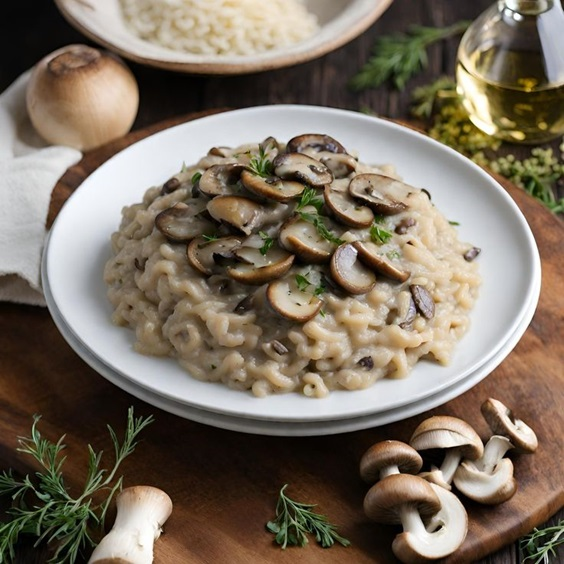
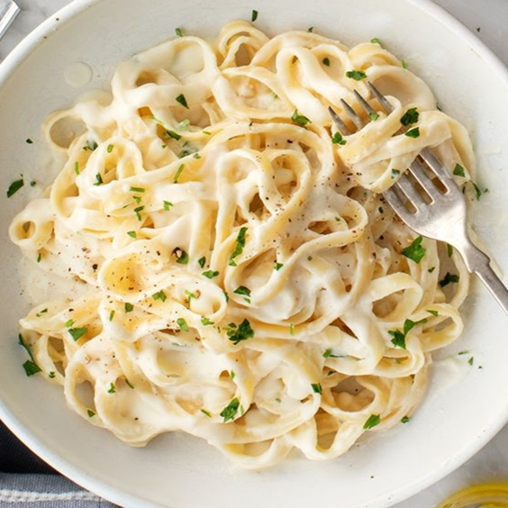

El Rincón De Las Recetas
Inicio
Recetas Dulces
Recetas Saladas
Recetas Saladas Paso a Paso
Pastel de Papa
1KG de papas
1/2KG de carne picada
1 Cebolla
1/2 Morron
Dos ajos
Pimentos, sal y pimienta
100ml de leche
Nuez moscada y manteca
Aceite
Cortar las papas en cubos y ponerlas a hervir con sal.
Picar la cebolla, el ajo y el pimiento morrón.
Calentar el aceite en una olla o sartén y sofreir la cebolla, el pimiento y los ajos.
Cuando la cebolla está transparente, agregar la carne y sofreirla mientras se deshace con una cuchara.
Salpimentar, agregar la pastilla de caldo, el ajo en polvo, el pimentón y cocer la carne 15min.
Una vez que las patatas estén hervidas, hacer en caliente un puré con la manteca y la leche. Salpimentar.
Poner en una fuente para horno una base de puré, agregar por encima la carne (dejar que se entibie un poco) y colocar otra capa de puré. Para distribuirlo, se moja la cuchara con agua fría.
Llevar a horno fuerte o gratinador unos 15-20 min. o hasta que la parte de arriba esté crocante.
Puede agregarse al relleno de carne un huevo picado, olivas verdes picadas o pasas de uva.
Risotto

5 Hongos portobello grandes
1 Cebolla
1/2 Vaso de vino
100gr. de manteca
1 Chorro aceite
1 Taza de arroz carnaroli
Caldo
Cebolla de verdeo
La base de todo buen risotto es sin dudas el caldo. Así que lo primero que tenemos que tener listo es el caldo. Pueden hacerlo casero o de cajita.
Picar bien pequeña la cebolla, cortar los hongos en rodajas y picar la cebolla de verdeo.
En una olla vamos a colocar la manteca y el aceite, y vamos a cocinar la cebolla a fuego suave hasta que esté transparente, le ponemos un poco de sal para que largue líquido y quede bien cocida.
Vamos a agregar los hongos, revolver y tapar. Lo dejamos apenas unos minutos para que se dore sin que se cocine de más. Subir bien fuerte el fuego y colocar vaso de vino. Dejar hasta que se evapore el alcohol (es decir, cuando ya no haya olor a alcohol)
Ahora si agregamos el arroz y movemos bien hasta que quede brillante y bien embebido en manteca, aceite y vino, sin tostarse.
A continuación vamos a repetir los siguientes 3 pasos hasta que el arroz esté al dente: Agregar caldo. Mas o menos un cucharón mediano. Revolver un poco. Esperar a que se absorba. El arroz del risotto siempre tiene que estar húmedo, con líquido pero no hundido en caldo, si seco del todo.
Cuando el arroz esté al dente, lo sacamos, le agregamos un poco de manteca, y batimos enérgicamente para integrar todo.
Fideos

1 huevo
100 gr de harina 0000 (aunque también se puede usar 0000
1 cda de aceite de oliva
Una pizca de sal
Poner la harina y la sal en un bol, integrar y hacer un hueco en el medio. Agregar el huevo y el aceite si eligen agregarle. Batir un poco con una cuchara o tenedor y unir en una masa.
Una vez que se haya integrado todo muy bien amasar. Amasar unos 15 o 20 minutos y dejar descansar por media hora.
En este paso hay que estirar la masa: ya sea con máquina de pastas o con un palo de amasar el proceso es el mismo. Hay que estirar la masa, doblarla y volverla a estirar. Una y otra vez hasta que quede del grosor que estamos buscando. Si es con la máquina hay que ir bajando un número cada vez, si es con el palote hay que amasar con más fuerza.
Se debe cortar en la forma que se prefiera, se espolvorea con harina y se deja orear unos 30 minutos.